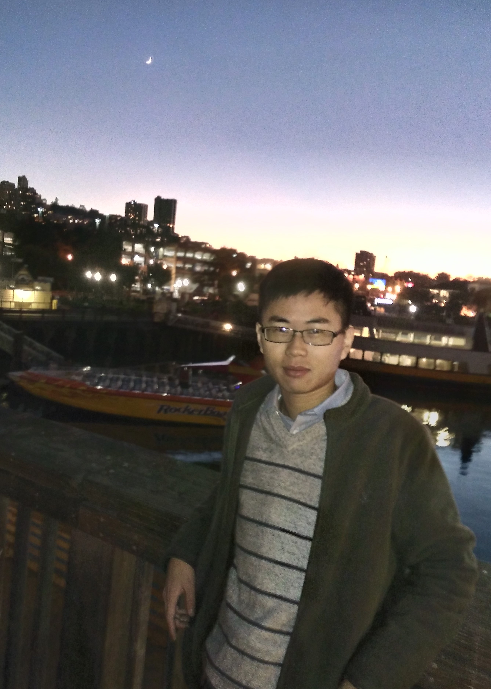

|  |
Fuhai Chen (陈福海)
I am currently a final year Ph.D student in Artificial Intelligence Department of Xiamen University. My advisor is Prof. Rongrong Ji. I received the B.S. Degree in Cognitive Science and Technology from Xiamen University in 2014. I obtained the M.S.-Ph.D qualification and finished my M.S. in Xiamen University in 2016. My research interests are in Computer Vision, Multimedia and Machine Learning, especially in vision-language content understanding and reasoning, multimodal content understanding, and their applications (like multimodal sentiment analysis and medical image-report analysis). |